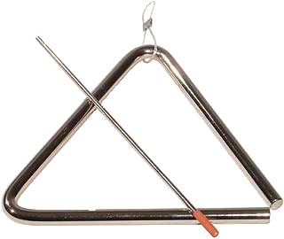
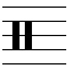

What is a triangle?
The triangle is a small percussion instrument made from a steel rod bent into a triangle with one open corner. The player hangs it from a cord and hits it with a metal beater. It rings with a bright, shimmering sound that cuts through a loud orchestra. [1]

Musical range and clef
The triangle has no specific pitch, so it has no written range. It makes a high, ringing sound, and players change its character with the size of the triangle, the beater and where they strike it. [2]
The triangle is written on a percussion clef, usually a single line, because only the rhythm matters, not the pitch. [3]

Where is the triangle seated in an orchestra?
The percussion section is at the very back of the orchestra, behind the brass, often along the back or right side of the stage. Exact placement changes with the piece and the hall. The triangle player stands or sits with the other percussionists, and triangles are often hung from a stand so both hands are free. [4]
Popular songs/pieces that feature the instrument:

References
- Wikipedia, "Triangle".
- Wikipedia, "Triangle".
- Wikipedia, "Triangle".
- Rockford Symphony Orchestra, "Are all orchestras arranged on stage the same way?".